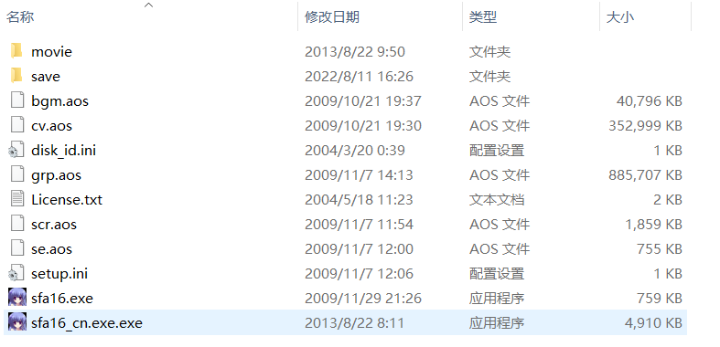
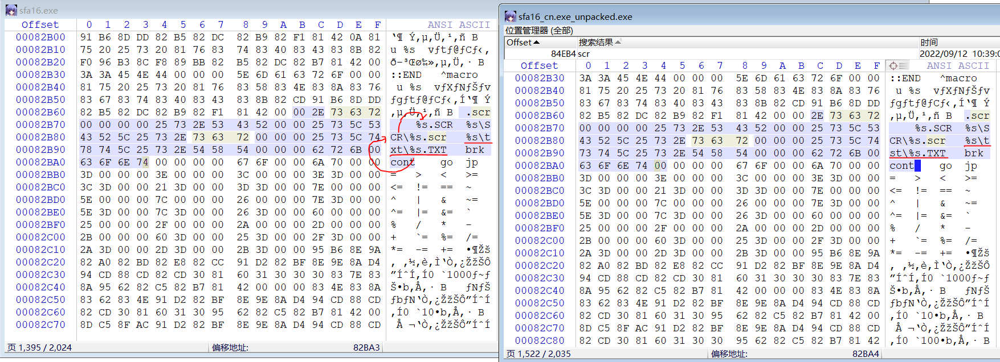
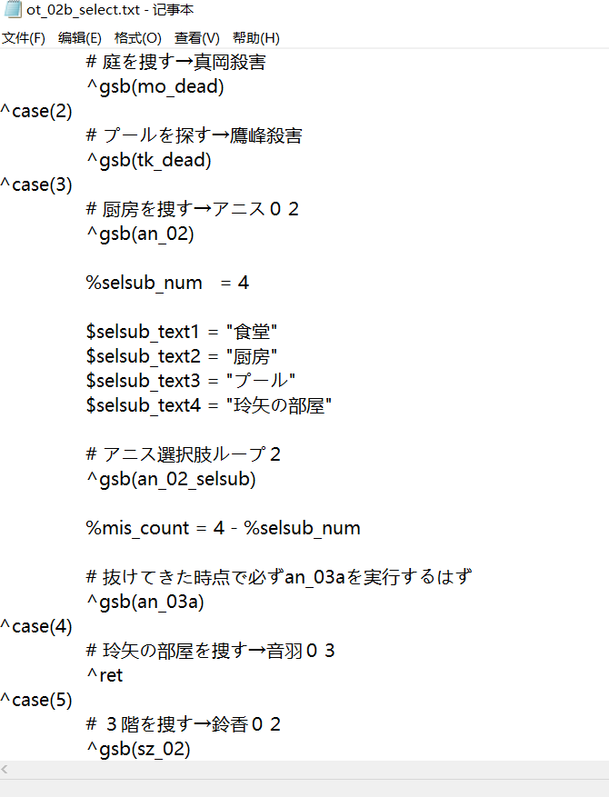

记一次GalGame的简单逆向
起因
学习累了，放送一下，看看书，玩玩游戏是很正常的事情，但是呢！有些游戏就是让人十分的不爽，比如下面这个
这是我目前见过汉化最糟糕的游戏了，没有之一，时不时蹦出日语还不是事情，结合前后文和日语基础还是看得懂的，但后面莫名其妙出现的“第三种语言”——乱码，就真的令人十分难受了，再加上这游戏的强制缩放屏幕，搞得一天的好心情都没了，所以我决定来破解它。既然如此我们要破解什么呢？我个人猜测，后面的乱码会不会是已经翻译的文本，因为GBK和UTF-8的编码不同导致封包后，一部分内容完好，另一部分乱码，基于这个猜测，我们来看看能不能把它还原回来。当然，事实到底如何呢？现在的我也不明白。
学习
既然要破解，第一步当然是学习了，我呢！实在不想再体验当初那种一步步读汇编码的痛苦精力了，这次我要站在巨人的肩膀上，在GalGame的破解方面技术是十分成熟的，这并不像我上次解包的那个游戏，基本没有人去研究，自然需要来消磨耐心了。破解的技术散布在各个论坛里，目前还活跃在国内的论坛，有看雪、吾爱等，甚至还有bilibili，首先是下面这位大佬的基础性视频，当然讲得都比较简单，基本都是识别基本引擎，使用现成工具，和一些普通的调试技巧，但跟着做很容养成破解的勇气，所谓艺高人胆大就是这么一回事，exe直接改十六进制文件，说实在的，我平常都不敢这么干，我是很怕出现各种文件验证、地址错位等问题的，但在软电池Sdwrap过法那里，更是将勇气发挥到了极致，直接删十六进制文件的内容。以前的我真的没这样的勇气，要知道对于二进制文件而言是有严格的格式要求的，有时还需要统计字节数，如果是我，顶多就只敢修改资源文件，因为反汇编也不可能得到完全的原始汇编代码，更何况它肯定不可能来自汇编代码的编译，也就是我们勇气只止步在静态分析上，看看它到底怎么运行的，修改它的运行轨迹，重来没有想过。
接着是调试工具，我们不会使用ide，它胜于静态分析，取而代之的是Ollydbg和x64dbg，当然我主要使用后面这个，因为前面的这个界面有些不好看，不太喜欢，就目前来看，功能性上基本都差不多
想要学习软件的使用的话，本来应该去看官方提供的手册，但我们是什么人，学计算机的人，有些东西稍微瞟一眼就应该知道是做什么的，更何况我们还有源代码调试的经验
首先是区域1的“模块1:ntdll.dll”，它表示当前代码所在的文件部分是动态库内而不在主程序里，对于非主程序部分一般都是不考虑的，它属于系统代码，可以相应的系统API手册来看用法，没必要去读难理解的反汇编代码；接着是区域2的eip寄存器，它指向将要执行的代码，也就是当前调试到了代码哪里的意思；区域3有步进和步入两个操作，它们用来推进代码的执行步入是一行行执行，而步进则会对函数调用的代码跳转进去，如果对于某些函数的作用不清楚的话，则可以跳进去看看，对应到汇编代码就是“call+地址”；区域4则是显示CPU的寄存器参数，比如EAX、EBX之类的寄存器，还包括记录下一步代码地址的EIP指针和一些标志位ZF、PF等；区域5是stdcall即调用栈堆，表示call指令调用路径，此处可以约化深度，更详细的需要选项栏中的调用栈堆；区域6则进行内存的监控，但地址需要自己从运行内存中找，一般动态修改工具都是在这部分区域找到对应参数进行修改的，比如你在代码里申明int i = 1之类的就可以在里面找到；区域7是用来管理断点的，断点这玩意一般的调试都挺常见了，运行的时候我们一般不会从头一行行的到想调试的地方，而是通过在特定位置打断点，等程序运行到此处再调试。这样，其实我们对x64dbg当然基本界面就已经很熟了，当然如果你对程序的运行机制很了解的话，自然就知道它需要什么，它该是什么样，然顺便就在程序中找到了它的对应位置。
对于程序的基本机理不是很懂的话，可以看看这个大佬的新人破解教程，他直接从汇编的角度来教新人，基本可以不需要开发的基础，直接从一些基本的汇编指令来理解程序和它的运行，还教授了调试工具的用法和一些实例，甚至还讲了jmp和call之类跳转指令的区别，真正的强者敢于面对复杂的汇编指令，并试图去寻找规律，从而破解它，实在是令人敬佩。当然，调试还有一个更高的境界就是代码注入，本质和Chrome浏览器那个执行js代码的终端差不多，但是它是针对静态语言肯定比动态语言js困难很多，但仍有大佬开发了基本框架Frida，对于这玩意，因为知道它的原理，想要研究还是可以研究的，但因为基本用不到也就深入研究的必要了，只能说需要多少就学多少，不然太容易忘记了，就白学了。说了这么的学习的东西，接下来该回归现实了，我们研究的这个游戏不归属上面大佬所说的任何一个GalGame引擎，好像就解包不了了得自己研究，但事实却是，我们的GARbro资源解码收录器的数据库实在太强大了，还是把这个游戏资源解码方式给收录了进去
自然地，资源解码就不在考虑的范围内，当然这玩意也不是万能的，像下面这个游戏
格式包装方式虽然是已知的，但对应的加密方式并不在数据库内，对于这样的资源解包就得亲自去分析汇编代码了。
游戏初探索
接着我们来仔细研究一下这个游戏，资源结构如下
其中ini是明文配置文件，txt是开源使用协议，movie是游戏的OP，save是游戏存档，sfa16.exe是原始的程序，sfa16_cn.exe.exe是汉化后的程序，aos是可以被GARbro解包的资源文件，其中的scr就是我们汉化的核心，剧本文件了，通过简单的解包
我们发现游戏资源是以日语形式存在的，也就是说这些数据是给原始程序使用的，那么我们的汉化跑哪里去了呢？这时我们注意到sfa16_cn的内存比原程序大了几倍，这意味着汉化脚本应该在程序里面，没办法了，只能先动态调试一下了，首先我们将程序运行起来
我们想要干嘛呢？在运行内存中找到这句对话，并顺手找到脚本所在的地址，从而看看改后的剧本长什么样，我们对内存进行特征匹配收索
我们可以直接在GBK编码中输入汉字，程序会自动转化内存中的十六进制编码形式，结果有很多个，主要是这句话可以出现在好多地方，我们最后选择了两处
上面是这句话所在的内存地址，大概在0xAB95FE0处，而下面的则是脚本读取后所在的缓存地址，大概在0x2C1014D处，值得注意地是这些都是程序运行的虚拟地址，在主程序的十六进制文件中是找不到的。我们随便跳点剧情，可以看到
运行结果如我们所想，所以猜想大概率是正确的，我们来监视一下内存2，它包含了对话的主要内容，先看看日语处的情况
和所想基本没有区别，即所显示的文本GBK下的日语，接着看看我们主要研究的乱码部分
在GBK下内存数据和显示的是一样的，那么乱码的原因如我们之前所想的那样吗？可惜并非如此
在Shift_JIS编码下显示正常，这意味什么呢？这意味着汉化组没有汉化这部分内容，而且对于这部分日语还没有转化为GBK编码，所以在同一套GBK体系读取下，被转化的日语被读了出来，没被转化的部分被读成了乱码。基于这样的事实，我们一开始的目的看样子是没办法完成了，本来就没有汉化也就没有修复成中文的说法了，但是像这样的东西留着收藏库里总觉得不是很舒服，所以我们有了一个新的目标，乱码转日语，并配上机翻。
汉化分析
要想完成我们的新目标，就需要知道汉化补丁是怎么产生的。首先我们注意到这样一个事实
汉化补丁的函数导入表明显比原始程序的导入表小可好多，这意味着汉化补丁被加壳了，但这并不是那种防止破解的加壳，想想就知道，本身就是搞破解的，还会去加密吗？我们使用查壳工具来一探究竟
原始程序没有任何加密，而汉化补丁使用了MoleBox，这是window的一个资源打包工具，随便使用一个程序就轻松地把它解开了
解包后的exe与原程序的大小基本一致，这里我们稍微提一下window的资源查找机制，当代码中查找当前目录中的文件时，会优先看exe是否是打包型资源，并在里面进行查找，没有的话才会查找当前实际的目录。正因如此，我们就会见到两种类型的程序，一个很大的exe，又或者是exe带了一堆dll和资源文件，当然了单文件的时候也有可能是它本身没有依赖。这种资源打包机制的一个作用就是PC程序安装，安装包就是资源打包型的exe，一部分是配置代码，另一部分则是作为资源的主程序，运行过程就是将exe内的资源复制到安装路径，并进行一些必要的配置操作，像修改注册表之类的事。而我们则是利用它来实现汉化补丁与日语原版的共存，运行原版时它读取路径下的原版资源，而运行补丁的时候，但遇到汉化文本时优先读取exe内的汉化资源，而对于exe内没有的cg之类的，则进一步读取当前的目录，从而达到对于非汉化资源读取共同部分，而汉化资源读取各自部分的目的。当然了，直接改日语的资源也是可以达到汉化的目的的，但总会给强迫症一种不是很完美的感觉。
汉化exe和原版exe内存虽然接近，但仍有较大差别，所以肯定被改过来，我们看看到底被改了什么，在此之前我们先将_extracted里的文件移出来，让汉化补丁读取到它，你可能会有疑问，为什么同样是目录下的资源文件，却优先读取汉化补丁呢？这其实游戏通常的开发习惯有关，进行调试的时候，我们一般都希望是明文，这样便于修改，脚本游戏也是类似的，但存在封包资源和解包资源，优先读取解包资源，利用这一点很多游戏有衍生出来patch即补丁机制
经过不断实践，我们发现游戏主要改了几个地方，首先是图片区，在片头的第二张里面换成了汉化组的信息，还有一些基础的UI，这些直接在补丁里添加即可，并不困难
当然格式最后保持一致，因为大多游戏都是文件名加后缀识别文件的，后缀不同有可能会读取不到；然后是菜单的汉化，它属于window内置API，可以十分容易的提取处配置文件并修改
通过探索我们发现有两个一样的menu，那么游戏读取的是哪个呢？只要制造差异就行了，像下面这样修改两个配置文件
封包后并运行可以发现，下面结果
所以游戏选择的第二个菜单，这也是汉化组所选择的那一个；接着应该是编码的修改，原始游戏使用Shift_JS，而修改后的使用GBK，这个可以通过跟踪CreateFontXXX之类的函数来实现，因为大部分游戏都是通过这种系统API方式来创建字体的
在调用的参数中，我们发现字体编码对应的16进制代码页是86，也就是GBK，而原来的游戏可以发现是80，即对应Shift_JIS，如我们所预料
最后一个是汉化的脚本，原来游戏对应的是scr.aos加内部的.scr文件
如果对应到非封包资源理应是scr/+.scr，但它却是tst/+.txt文件，注意到两者长度一致，所以大概率是改了16进制文件进行重定向，通过16对比，我们可以发现修改的地方
首先我们可以猜出，游戏对脚本资源的读取顺序应该是，txt/%s.txt、scr/%s.scr和%s.scr，其中的%s应该是占位符用来表示要读取的脚本的名字，而原始的读取方式应该是第二种，破解则是针对第一种，大概是用来测试的情况，将原来的txt/%s.txt改成了汉化所对应的tst/%s.txt，为什么可以这么猜？只能说这是实际测试出来的结果，只要敢于尝试就能猜出来，实在不行的话，就定位去读汇编代码吧
反正就是这么一回事，分析什么的也懒得做了，至于其它细微的区别都是因为打包软件的不同所导致的，本质运行上是没有差别的，最后我们来分析乱码的根本原因在哪里？对比原版和汉化的，可以发现
汉化提取的资源少了很多，而少的那部分却包含了文本剧情，这意味着汉化补丁在运行的时候，对于这部分剧本找不到脚本，只能去读取原始的资源，而原始的资源是Shift_JIS编码，读取的却是GBK编码，从而导致了最终的乱码，一切的原因都已经摸清，接着就是改造了。
游戏改造
我们预计完成两个改造，首先提取所有的包含剧情的脚本，然后移动到tst内，对于出现的跳过即可，然后时间排序，对于刚引入的资源进行编码转化，这样进行一次封包，从而得到中日混合的游戏，至少不包含乱码了。接着我们对日语部分进行机翻，我不是很喜欢这个游戏，所以也懒得去润色或自己翻译了，这样完成了第二次封包，拿到一个中文的补丁，这样我们的目的和任务就全部都达成了。首先，我们查出，包含剧情且没被汉化的有下面这些
转码以后，值得注意的是这里的转码并不是读取以后改个编码，而是以Shift_JIS读取文本形成通用编码的中间体，再以GBK编码进行数据保存的意思，然后我们进行第一次打包
然后运行起来，在原来乱码的地方已经变回了正常编码
但其实我们还发现了一个问题，有些选项是日语，而有些选项却是乱码，其实有些选项也包含了文本
所以对于这类脚本，也不得不包含进汉化补丁里面，经过排查，我们找到了所有需要转码的选项脚本
最后进行同样的操作，校验一遍后没有遇到什么大问题，于是得到了第一个混合包，中日混合版，接着我们直接对其它部分用百度翻译，突然发现机翻也没那么好用，它会直接改变脚本的结构，还得一句句复制机翻，呵呵，算了吧，反正我也不怎么喜欢这个游戏，同一题材的3days和euphoria的剧情明显优秀多了，就让有志者去翻译吧，而且日语我又不是看不懂，下面是解包资源，将里面没汉化的脚本进行汉化，再用随便一个打包软件，比如EnigmaVirtualBox，就能制成汉化补丁了。
就说这么多吧，其实这次的破解实在没什么惊艳的地方，游戏本身就比较老是原因之一，破解工具比较齐全也是一个原因，但作为一个学习的记录合格的，不能因为简单就小看别人吧，好歹人家也是努力过的。